Projects
- All
- Recent
- Early
- Midwestern
- California

Muffler Men
2019
Calumet, Oklahoma- A donated mural honoring 'Muffler Men', those giant fiberglass sculptures created in the 1960's that sat in front of businesses throughout the United States. They normally held a tire, a muffler, or in the case of Paul Bunyan, an axe. The Uniroyal Gal held a tire in her left hand. I collaborated with artist Scott Farmer to create the dancing muffler man, shown dancing with me! All 18 feet tall and installed on historic Route 66 about 35 miles west of Oklahoma City.

{kind=link}
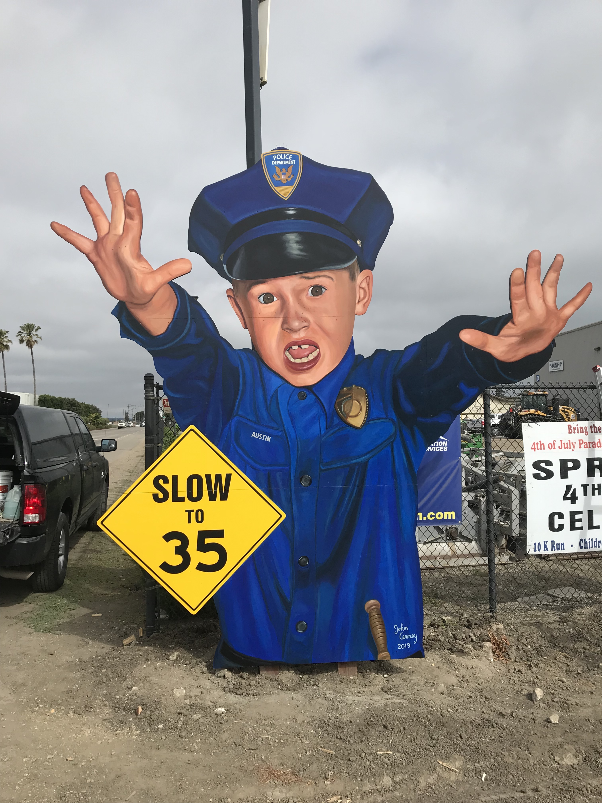
Spreckels Cop Kids
2019
A commission by the Spreckels Foundation meant to slow down the speeding traffic that is a constant problem for the tiny suburb of Salinas, CA. 12 feet tall.

Schnepf Farms
2019
Schnepf Farms of Queen Creek, AZ- Two cutout paintings installed on their farm. An 18 foot tall painting of a mom and daughter with a basket of peaches, and a 16 foot tall painting of a little girl holding a pumpkin.

Suncoast Farms
2019
Suncoast Farms in Hollister, CA- A 1/3 scale old barn using scrap pieces of plywood (10 feet tall) It sits in a field that is visible from the dining area of the bakery/restaurant on the farm.{kind=link}
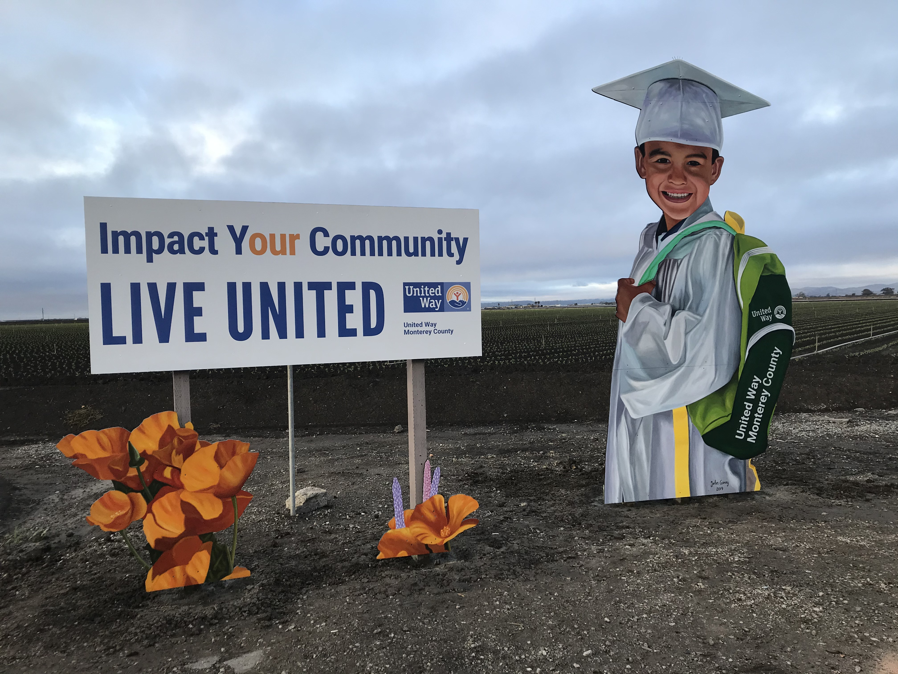
United Way of Monterey County
2019
United Way of Monterey County- 14 foot tall painting of a small boy wearing a cap and gown and carrying a backpack...a program offered by United Way. On a busy intersection in Salinas, CA.{kind=link}
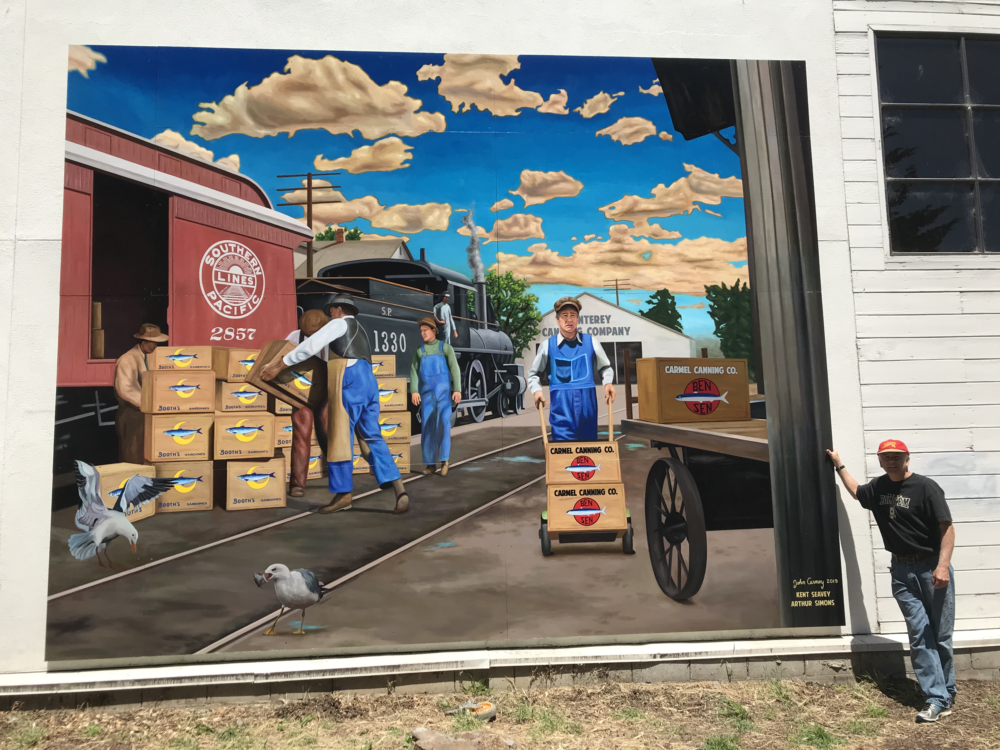
Cannery Row Historical Mural
2019
Commissioned by the Cannery Row Business Improvement District, attached to a wall along the Rec Trail off of Cannery Row in Monterey, CA. The 4th mural the artist has completed along the Rec Trail, this one shows cannery workers from around 1910 loading crates of sardines onto a Southern Pacific rail car.{kind=link}
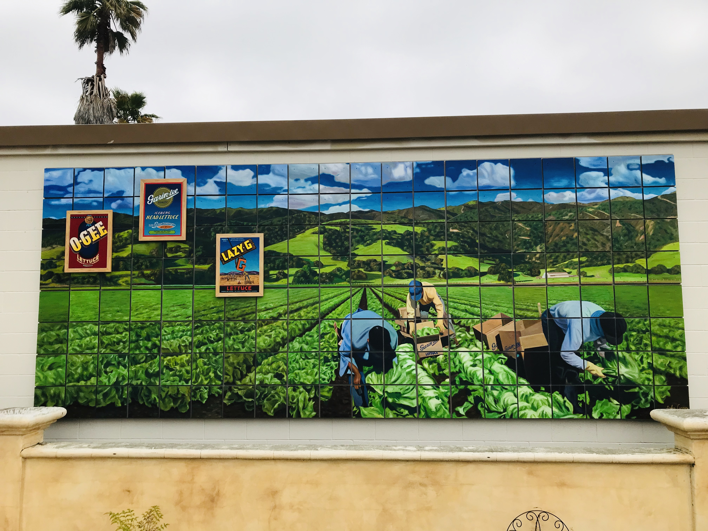
Backyard Salinas Valley Scene
2019
A private commission by a family in Salinas, CA. 20 feet wide by 8 feet tall, done in the artist's square panel method.{kind=link}
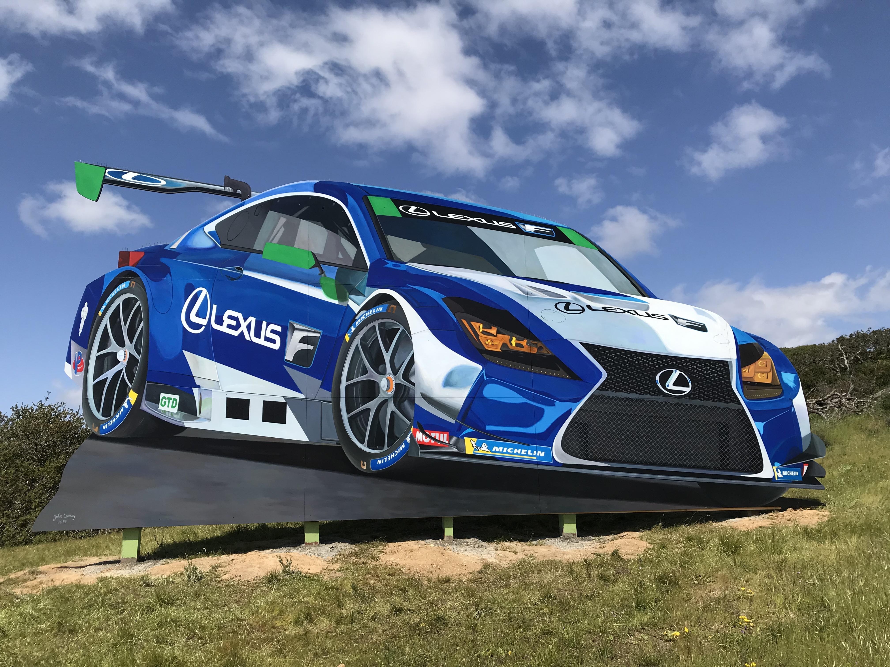
Giant Lexus
2019
A new giant race car on the hillside of the Laguna Seca Race Track in Monterey, CA. Weather-Tech is the main sponsor, but Lexus signed on as well and commissioned this 12 foot tall by 26 foot wide race car.
Ralph and Big Willie
2019
Ralph and Big Willie, for Wish Farms in Plant City, Florida. These 20 feet tall cutouts depict two former employees of the Wish Farm strawberry company, established in 1922. They sit alongside Highway 4 in front of the in-progress construction of a new warehouse and offices of Wish Farms.{kind=link}
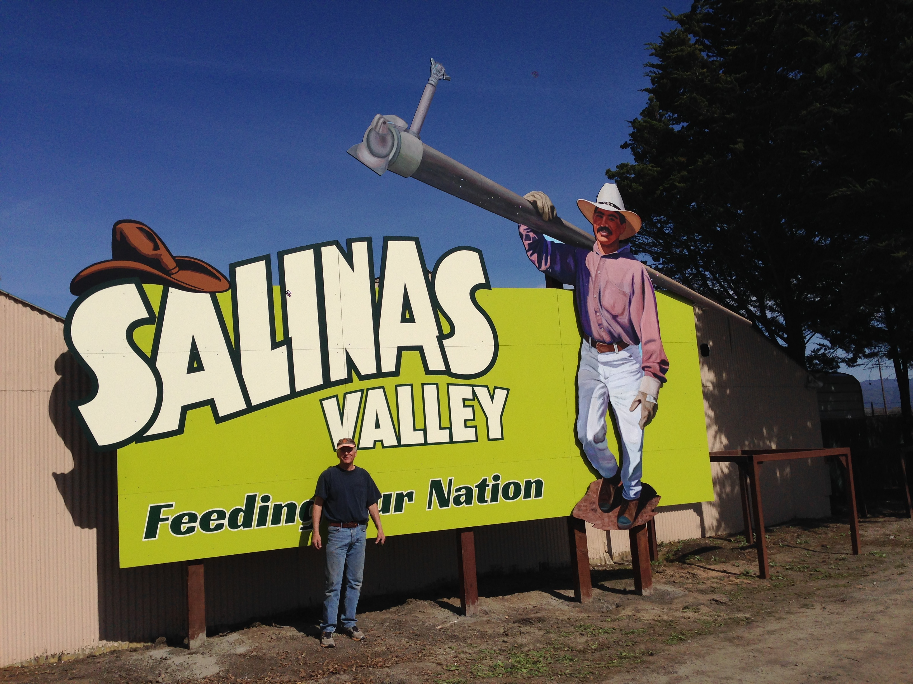
Mural on Highway 68
2019
Mural/sign on Highway 68 in Salinas, CA. It's located just before you enter Salinas, on the south side of the highway. Commissioned by a local farmer who wanted to remind locals and tourists of the rich farming heritage in the Salinas Valley. 22 feet wide by 12 feet tall.
Giant Marfa
2019
Elizabeth Taylor was added to the scene in January, completing the installation. Highway 90, 5 miles west of Marfa, Texas.{kind=link}
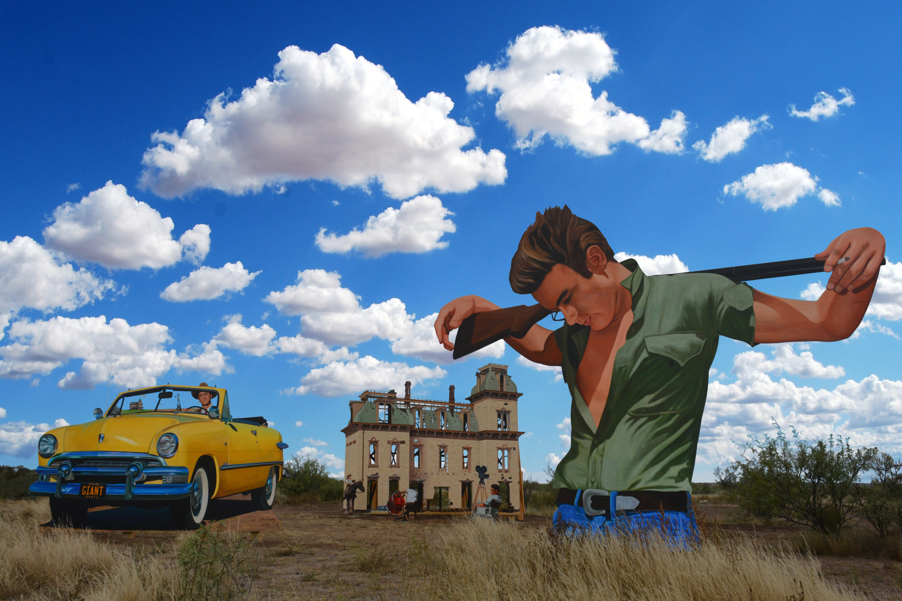
Giant Marfa
2018
A donation to the city of Marfa, Texas, the mural honors the movie 'Giant' (1956), which was partially filmed in this small west Texas town. The mural is a collaboration with singer/songwriter/musician Michael Nesmith who made possible the addition of an audio element to the mural installation. The sounds of Nesmith and his First National Band Redux play continually on a loop from hidden speakers near the automobile in the scene.
Ferrari
2018
Ferrari race car placed on the hillside at the Laguna Seca race track, off of Highway 68 in Monterey, CA. 32 feet wide by 10 feet tall. WeatherTech is the new track sponsor at Laguna Seca, and they also sponsor this Ferrari.
California Rodeo Poster
2018
The image for the 2019 California Rodeo poster. Andy Burrell is featured with his barrel, and has been an active participant with the rodeo for many years. 15 feet tall by 12 feet wide. The cutout is attached to a wall at the Salinas Sports Complex.
James Dean
2018
Large cut-out painting (20 feet) of James Dean attached to the wall of the renovated Brookdale Lodge in Brookdale, CA. A previous mural of Dean was painted on the wall for several years but was painted over during the renovation. Located off of Highway 9 in the Santa Cruz mountains.{kind=link}
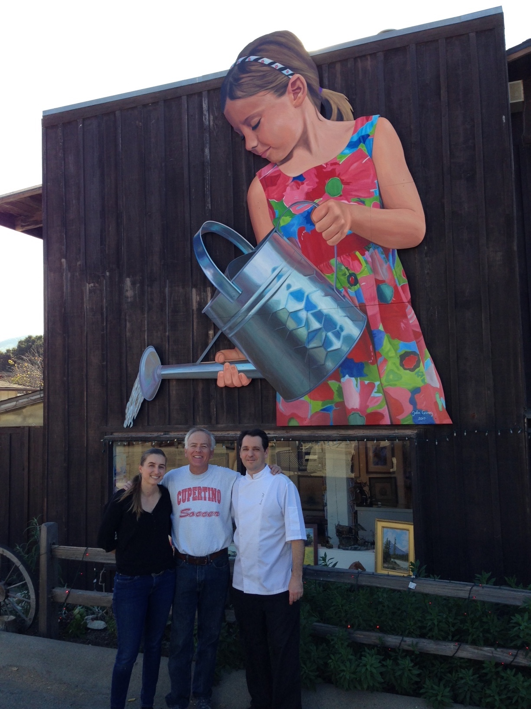
Anaïs Giving Life
2018
Standing with the artist are the couple (Jessica and Jerome) who commissioned the 14 foot tall painting of their daughter Anaïs in the background. A tree was planted shortly after the installation, which she will constantly be watering. Located off of Carmel Valley Road in Carmel Valley, CA. The Kents own Jerome's Market, which is a part of the shopping center.
Orange County Fair Murals
2018
One of three murals commissioned by the Orange County Fair in 2018. The installations are located at the three main entrances to the fairground in Costa Mesa, CA. 14 feet tall. This one represents Neff Ranch, orange growers in Orange County.George Comes to Benton
2017
A donated mural to the city of Benton, Illinois. The mural commemorates the first visit by a Beatle to the United States, George Harrison, in 1963. George and his brother Pete came to visit their sister Louise and her family in Benton, and was virtually unknown at the time by Americans. The Beatles would make a big splash the following year on the Ed Sullivan Show. George stands 16 feet tall, and the girls 8 feet tall. Located off of Highway 57 just north of Benton.
{kind=link}
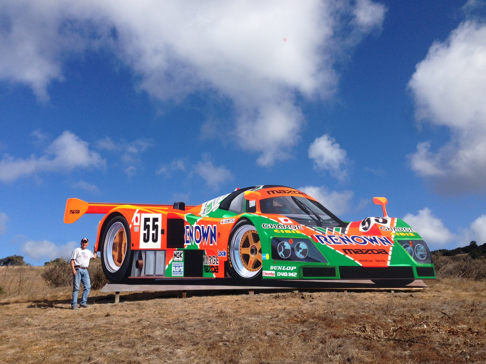
Mazda Race Car
2017
Historic 787B Mazda race car, 32 feet wide by 10 feet tall. Located on a hillside at the entry to Mazda Laguna Seca Race Track, off of Highway 68 in Monterey, CA.
Wayne Rainey on his Yamaha
2017
Located off of Highway 68 at the entry to Laguna Seca Racetrack in Monterey, this commissioned project honors the multi world champion racer. 12 feet tall. Artist standing next to the bike.{kind=link}
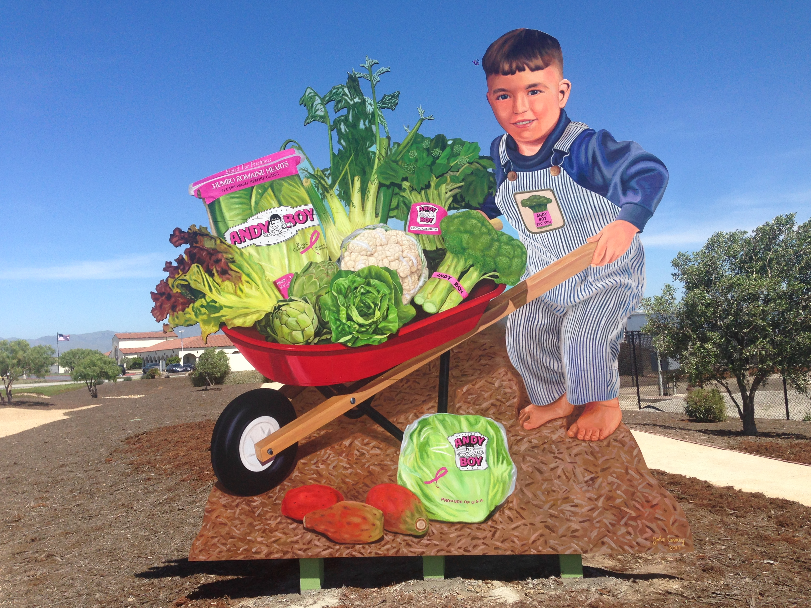
Andy Boy Pushing Cart with Vegetables
2017
The iconic logo for the D'Arrigo Brothers Produce Company is central in this mural that stands near the companies facilities in Salinas, CA. Andy stands 12 feet tall.
California Rodeo Poster Project
2017
Rodeo scene of bucking bronc with rider, and fans, 25 feet wide by 14 feet tall. The scene will be the central image for the 2018 California Rodeo Poster. Salinas, CA.Tribute Mural of Eddie Pisoni and Saw Breschini
2016
Over 1,100 painted plywood panels attached to a barn on the Breschini Ranch off of Highway 101 in Gonzales, CA.

Cowboy Ruckus
2016
An installation on Highway 285, 73 miles north of Roswell, New Mexico. 18 feet tall. A non-commissioned piece showing two Cowboys arguing with one another, with cars driving in the middle of the heated exchange. The Cowboys are two-sided so that both directions of traffic can see the argument.
{kind=link}
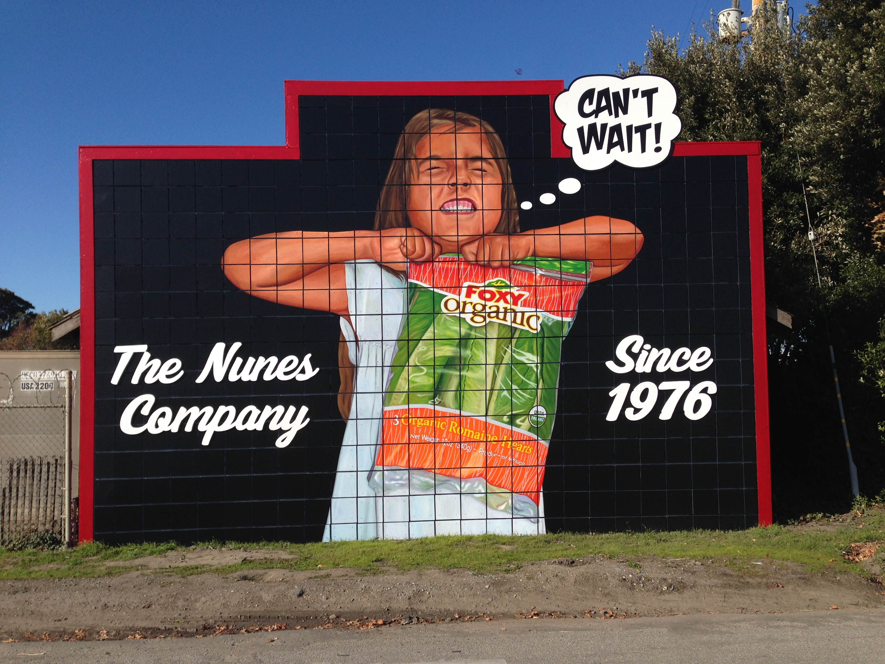
Nunes Company Sign
2016
This is the 4th billboard for the Nunes Company on this vintage barn on Highway 68, a couple of miles west of Salinas, CA. The little girl can't wait to rip open the bag of organic romaine lettuce. 26 feet wide by 16 feet tall, painted on plywood panels.
SELFIE
2015
A scene that pokes fun at the egocentric nature of social media and the rise of selfies. Originally installed in the Mobile Museum of Art in Mobile, Alabama. Now installed in Langan Park, just outside of the museum. Human figures are approximately life size.
Creepy Crawler
2015
Whimsical scene located 9 miles east of Miles City, Montana off Highway 94. Baby is 16 feet tall and is made of 175 painted plywood panels. The rhino, velociraptor, and bison are all life-size. Sponsored by the Art Club of Custer County District High School and installed on the Muggli Brothers ranch.
Baby and Dresser/Louis Mohana Furniture
2015
Giant dresser and baby installed alongside the drive up to Louis Mohana Furniture in Bourg, Louisiana. 12 feet tall by 16 feet wide.{kind=link}

Rain For Rent
2015
Mural/sign for the Rain for Rent irrigation company/San Joaquin, CA. 16 feet tall by 12 feet wide.{kind=link}
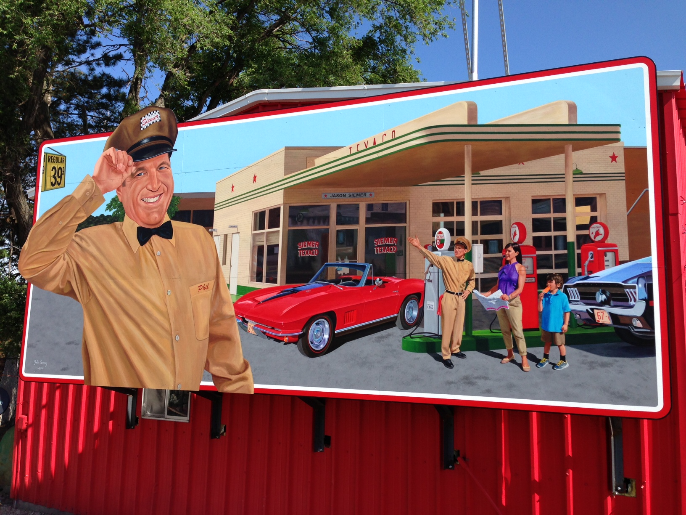
Siemer Auto
2014
Friendly Service attendant and old Texaco gas station mural created for Siemer Auto in Fremont, Nebraska. 24 feet wide by 10 feet tall. Nostalgic scene reflecting the quality service and vehicles at Siemer Auto.{kind=link}
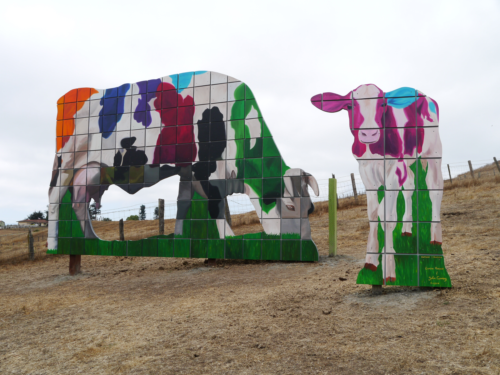
Hathor and Hamish
2014
Two colorful cows located on the same property as Cerney's "Enjoy the Game" mural in Prunedale, CA. Larger cow stands about 10 feet tall, smaller one about 7. Painting and installation assisted by Lizzie Prader.
Welcome to Roswell
2013
Photo above is of the main scene of 'Welcome to Roswell', located on Highway 285, 6 miles south of Roswell, New Mexico. Community donation mural depicting a local rancher family greeting space visitors. A scene to the right side of 'Welcome to Roswell'...rancher's son helping aliens jump start their saucer.
A scene to the right side of 'Welcome to Roswell'...rancher's son helping aliens jump start their saucer.
 The artist using lights for the first time on one of his installations. The 'Welcome to Roswell' flying saucer is adorned with LED lights, powered by a solar panel, lit up 24 hours a day.
The artist using lights for the first time on one of his installations. The 'Welcome to Roswell' flying saucer is adorned with LED lights, powered by a solar panel, lit up 24 hours a day.

Lake Tahoe Historical Society
2013
Located on Highway 50 in Meyers, CA. 32 feet wide by 14 feet tall. A depiction of the Celio Family during one of their bi-annual cattle drives.{kind=link}
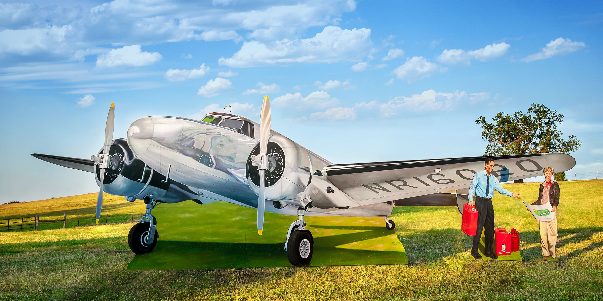
Amelia Comes Home
2012
A donation to the community of Atchison, Kansas. This mural, 'Amelia Comes Home' is the artist's lighthearted view of what happened to Amelia Earhart and navigator Fred Noonan on their fateful flight across the Pacific in 1937....they simply ran out of fuel and Amelia landed near her birthplace of Atchison. 38 feet wide by 11 feet tall. Photo by Mike Stec. Detail of 'Amelia Comes Home' mural, installed outside of Atchison, KS (birthplace of Amelia Earhart) Non-commissioned project, a donation to the community....the artist's version of what happened to Amelia and her navigator Fred Noonan on their fateful flight over the Pacific in 1937. Slightly larger than life-size.
Detail of 'Amelia Comes Home' mural, installed outside of Atchison, KS (birthplace of Amelia Earhart) Non-commissioned project, a donation to the community....the artist's version of what happened to Amelia and her navigator Fred Noonan on their fateful flight over the Pacific in 1937. Slightly larger than life-size.

Giant Corn Farmers
2012
Commisioned by a Minnesota ad agency, these two 18 foot tall farmers are installed off Highway 35 near Ames, Iowa. They are meant to draw attention to a regional farm show.
Foxy Mural
2011-2012
Newest version of the Foxy mural, on Highway 68 just outside of Salinas, CA. Tom Nunes Sr. stands in front of a Salinas Valley scene. The background is made up of over 400 plywood panels. The mural measures 17 feet tall by 26 feet wide. Background photo shot by Kirk Kennedy.
Jigsaw Ranch
2011
Located off Highway 3 in Centrahoma, Oklahoma. 12 feet tall. The rancher is 'building' his cattle using jigsaw puzzle pieces. Installed on the property of Kim and Deward Strong. Deward modeled as the rancher.

Big Sur Marathon Mile Markers
2010
Mile 14 marker for the Big Sur Marathon. Mile 24 marker for the Big Sur Marathon. Sponsored by Runner's World Magazine. 7 feet tall.
Mile 24 marker for the Big Sur Marathon. Sponsored by Runner's World Magazine. 7 feet tall.
 Mile 20 marker for the Big Sur Marathon, run in late April (hitting the wall).
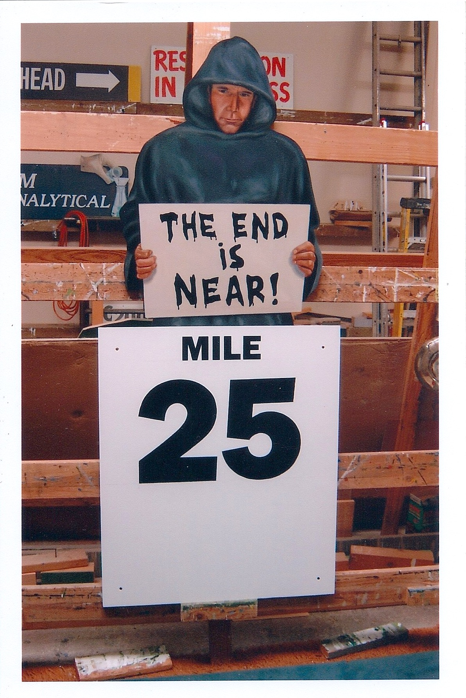
Detail of Mile 25 marker for the Big Sur Marathon- The Doomsayer.
Mile 20 marker for the Big Sur Marathon, run in late April (hitting the wall).
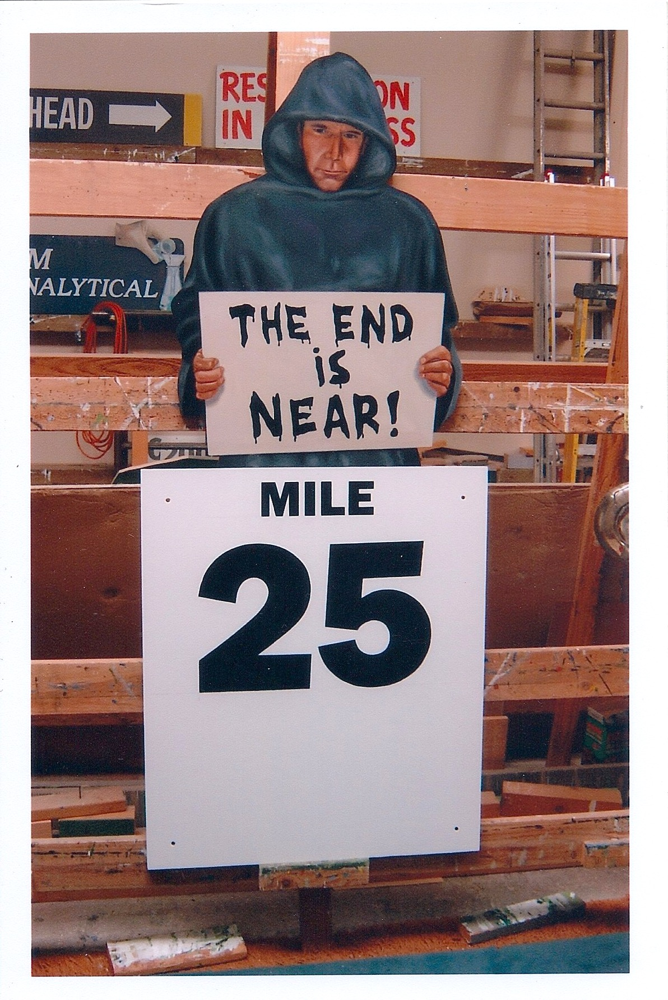
Detail of Mile 25 marker for the Big Sur Marathon- The Doomsayer. {kind=link}

Harvey House Train
2010
A re-enactment of the first train that arrived in Salinas in 1872.....it actually only came off the tracks. Installed in the backyard of the Harvey House next to the train station. 18 feet tall.{kind=link}
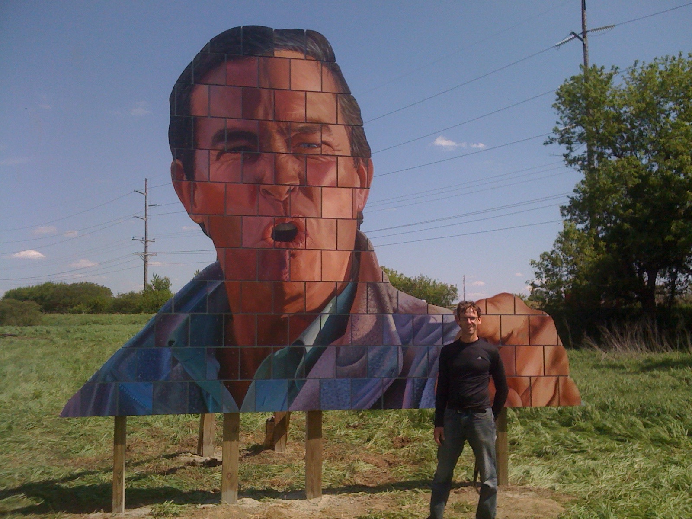
Emoticons
2009-2010
Angry Guy (Jeff Hitchcock). One of 3 twelve foot tall portraits installed alongside the I-80 Freeway in Iowa City, Iowa. On the property of the Harvest Farm and Preserve. Befuddled Guy (Dave Diamond) The 2nd portrait you see of the 3 faces. Twelve foot tall.
Befuddled Guy (Dave Diamond) The 2nd portrait you see of the 3 faces. Twelve foot tall.
 Disappointed Gal (Liz Andrus) The 3rd portrait you see of the 3 twelve foot tall faces. Installed alongside the I-80 Freeway in Iowa City, Iowa. Created using the artist's method of randomly selecting small squares of the photo image onto 12" square plywood panels.
Disappointed Gal (Liz Andrus) The 3rd portrait you see of the 3 twelve foot tall faces. Installed alongside the I-80 Freeway in Iowa City, Iowa. Created using the artist's method of randomly selecting small squares of the photo image onto 12" square plywood panels.

Louis Mohana Furniture
2009
Portion of a project for the Louis Mohana Furniture Company of Bourg, Louisiana-2 sided billboard, 14 foot tall.
Alberta Beef Producers
2008
Calgary, Alberta. 22 foot tall cut-out of rancher and daughter. 22 foot tall rancher and horse, with artist at base.
22 foot tall rancher and horse, with artist at base.

Cannery Row
2008
Monterey, CA. A series of 3 scenes installed on a recreation trail that runs alongside Cannery Row in Monterey. The photo above is of a 12 foot tall cut-out showing cannery workers from the 1930's Another in the series. 10 feet tall.
Another in the series. 10 feet tall.
 10 feet by 18 feet. Depicts cannery workers from the 1950's.
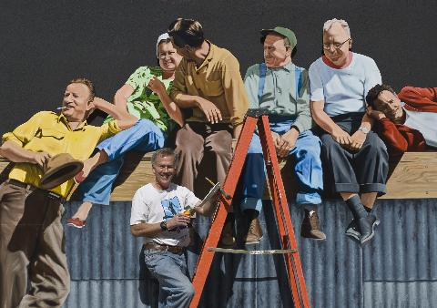
The last of the 3 scenes of cannery workers, with John Cerney applying finishing touches.
10 feet by 18 feet. Depicts cannery workers from the 1950's.
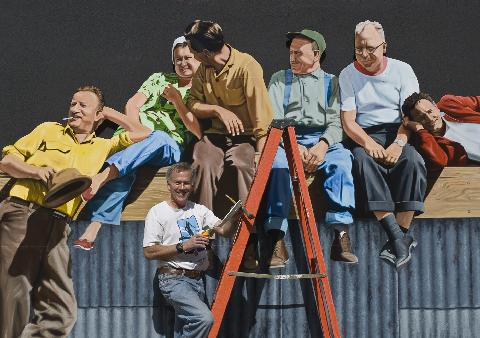
The last of the 3 scenes of cannery workers, with John Cerney applying finishing touches.
{kind=link}

Old Woman of the Mountain
2007-2008
5 miles south of King City off of Highway 101. Over 500 plywood 'tiles' paintings make up the model and the flowers. A non-commissioned project. Photo shot by Dan Kaufman. More of Dan's work at studiokaufman.com Installation detail.
Installation detail.
 Side view showing the two structures. 550 painted MDO panels screwed onto one inch plywood base.
Side view showing the two structures. 550 painted MDO panels screwed onto one inch plywood base.

Treasure Hunt
2007
Located on Highway 141, in Granger, Iowa, about 20 miles Northwest of Des Moines. 16 feet tall scene of two kids who have dug up a buried treasure of classic old toys.
Rice Gallery Show
2006
Rice University, Houston, Texas. Titled ' Big Landscape-Big West'. A scene from the late 1890's of an American family taking in a dramatic canyon vista of the Colorado River, from a painting by Thomas Moran. The landscape consists of over 900 masonite panels. Photo of John Cerney in front of his show.
Photo of John Cerney in front of his show.

Rally Salinas
2005
A 10 foot tall little girl reading a book. Cerney donated the mural to help the city of Salinas, CA with its' financial difficulties and potential closure of its' libraries.{kind=link}
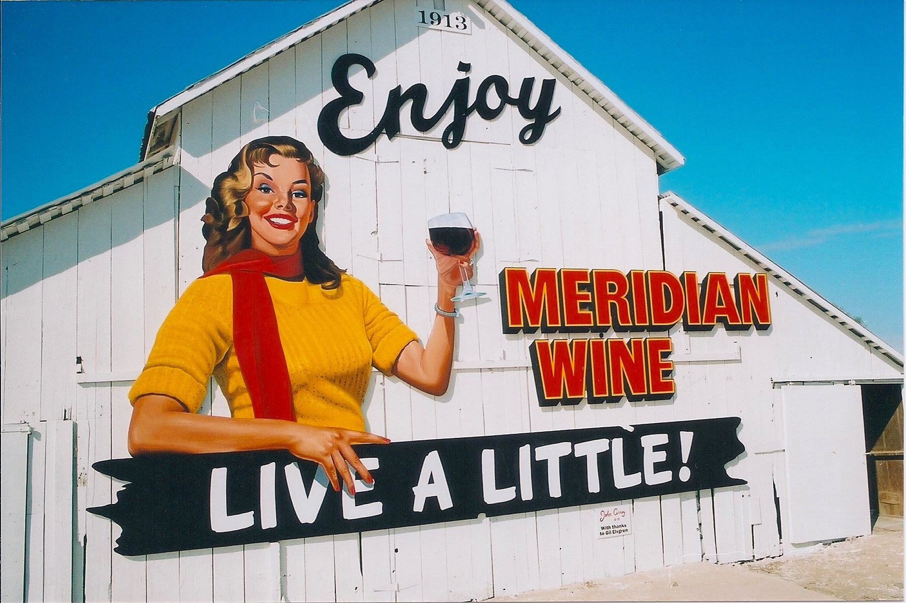
Meridian Vineyards Barn Mural
2005
A pin-up girl themed mural/billboard located on Highway 46, 10 miles East of Paso Robles, CA.
Enjoy the Game
1991 & 2005
This barn on Highway 101 north of Salinas changed its' theme from Enjoy the Drive to the baseball scene Enjoy the Game in 1991, and in this image from 2005 when it was totally restored. It depicts the 'golden era' of baseball from the 1940's and 50's. Revenue was derived from the sponsorship of the billboard panels and the fans in the stands. 12 feet tall by 50 feet wide. One of the billboards just completed in the artists shop for the baseball barn scene on Highway 101 north of Salinas, CA. The model is Lisa Silacci and the sponsor of the 5-a-day message is the Mills Family Farms.
One of the billboards just completed in the artists shop for the baseball barn scene on Highway 101 north of Salinas, CA. The model is Lisa Silacci and the sponsor of the 5-a-day message is the Mills Family Farms.
{kind=link}
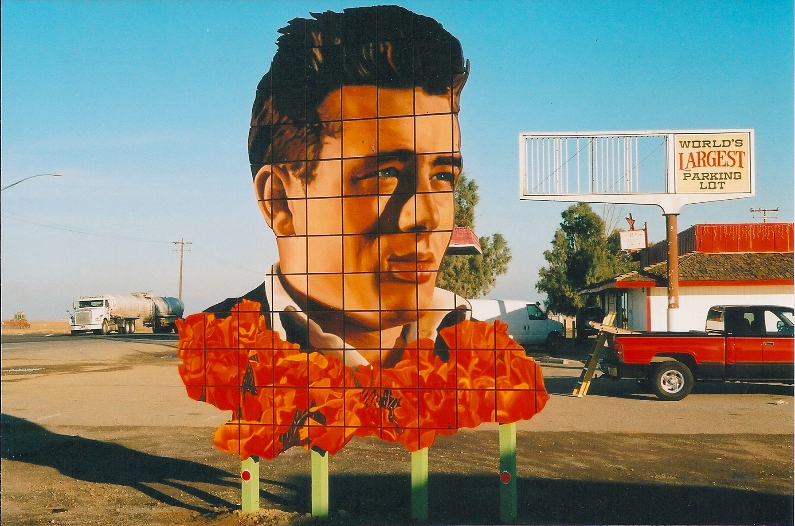
James Dean
2004
For the 50th Anniversary of his death on Sept. 30th, 1955. The location is on Highway 46 in Central California, at Blackwell's Corner, the last stop Dean made before being fatally injured in a car crash down the road. Painted on square plywood panels. 12 feet tall.{kind=link}
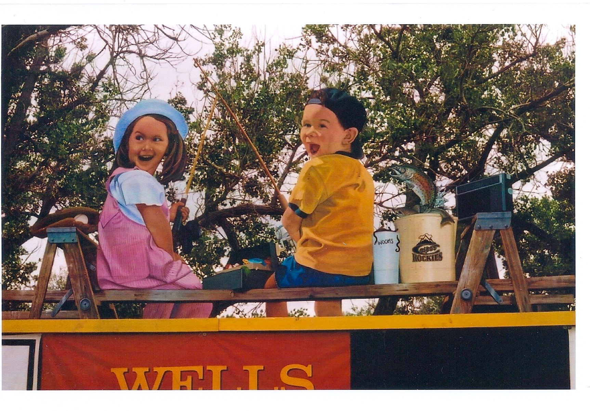
The Big Catch
2004
Casper, Wyoming (assisted by Dong Sun Kim). Placed beyond the outfield wall of a minor league ballpark, the owner wanted to liven up the atmosphere of the park, and the artist took advantage of the river that runs next to the field to show 2 kids taking in the ballgame while casting for trout. 20 feet tall.
Marathon Finisher
2003
12 feet tall. A tribute to Lise' Belton, who inspired the artist to start running in the mid-90's, ultimately completing the Big Sur Marathon with his friend Lise' in 2000. The painting is placed near the finish line of the Big Sur Marathon every April as a celebration of the accomplishment.
Marilyn Monroe
2003
Done for the Ag Wing of the National Steinbeck Center. 10 feet tall. Plays with the historical fact that Ms. Monroe was named the Artichoke Queen of the Castroville Artichoke Festival in 1948, before she was a Hollywood star. Assisted by Dong Sun Kim. The Ag Wing is no longer, but the painting sits in the lobby of the Center.
Timshel
2002
Commissioned by Mike Corlett, co-owner of Brandon & Tibbs Accounting firm in Salinas, Ca. This mural is painted on masonite and screwed onto their downstairs lobby wall.Actor James Dean stopping at a market/service station on his fateful trip to Salinas for some auto races. He died a few miles down the road in a head-on collision. Assisted by Dong Sun Kim. 10 feet tall by 12 feet wide.
{kind=link}

Phoenix Zoo
2002
Dong Sun Kim did the actual painting of this giant anaconda greeting visitors to the Phoenix Zoo. It is larger than life, but not by much.{kind=link}
{kind=link}
{kind=link}
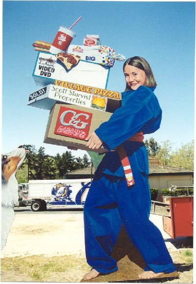
Karate Kid
2001
Assisted by Dong Sun Kim, this 18 foot tall little girl with her dog is meant to be a reminder to drivers on Highway 68 near Salinas, CA that there is a shopping center right behind her....with Karate classes as well.
Cat in Basket
2001
In progress shot of a private commission that would become a wall-hanging.{kind=link}
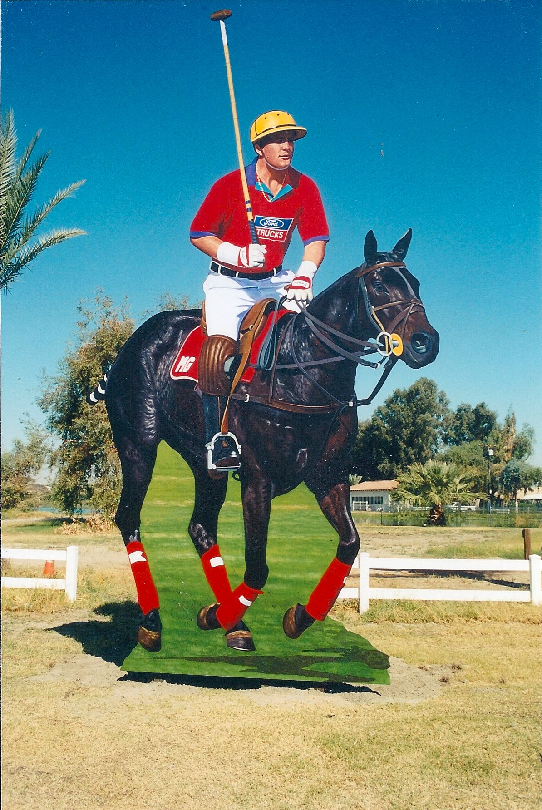
Polo Pony
2001
One of two polo ponies and riders that Mr. Kim and Cerney painted for the El Dorado Polo Club in Palm Desert, CA. 16 feet tall, they greet visitors as they enter the grounds.{kind=link}
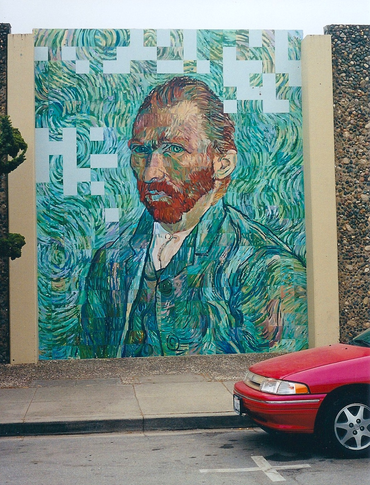
Vincent Van Gogh
2000
Nearly completed in this shot, it is a tribute mural to one of Cerney's favorite artists. The owners of the Star Shopping Center in Salinas, CA. paid for the supplies and allowed Cerney the use of a panel on a side street of the shopping center. It was painted randomly using little cut-out sections of a larger poster of one of the artist's many self portraits. Working in this way allowed Cerney to experiment with color and not become obsessed with copying a Van Gogh.{kind=link}
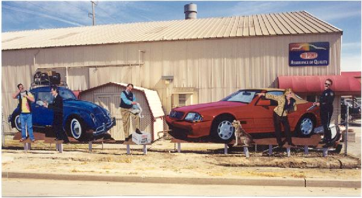
Abbott Street Auto Body
2000
Salinas, CA. Slightly larger than life, this is the 2nd generation mural created for a local auto body shop. Assisted by Dong Sun Kim.{kind=link}
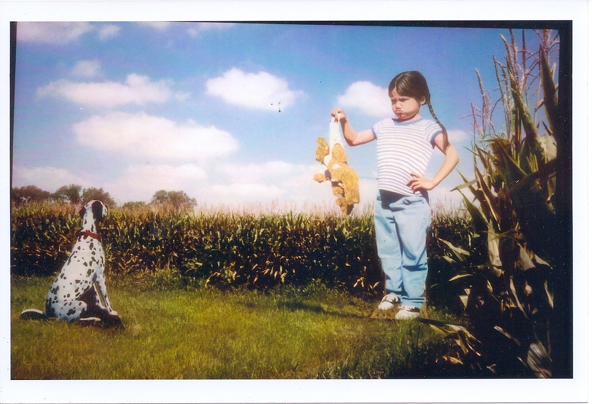
Little Girl with Torn Teddy Bear and Dalmatian
1999
16 feet tall. Installed in a corn field off Highway 30 near Dunlap, Iowa. A non-commissioned piece by Cerney as a visual oddity for drivers.{kind=link}
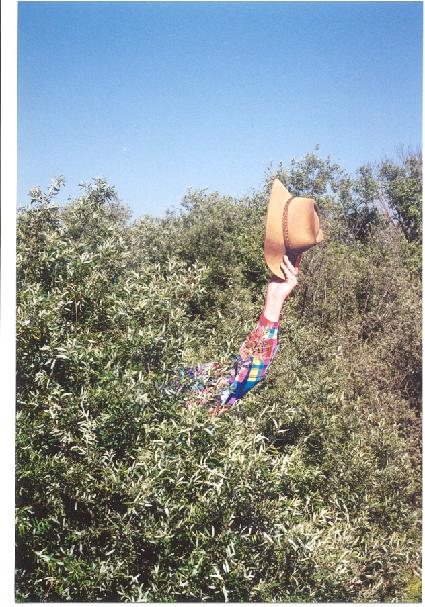
Arm with Hat
1999
Placed on Highway 68 on the edge of the Salinas River Bridge. The artwork is 8 feet tall, but it sits about 25 feet off the ground. Commissioned by the Crown Packing Company and meant to welcome people to the Salinas Valley. Perhaps the most curious mural the artist has painted, Cerney is often asked what happened to the head.
Big Baby with Tractors
1998
20 feet tall and located in Goodyear, AZ about 10 miles West of Phoenix on Highway 10. Commissioned by Duncan Family Farms as a 'marker' for travelers to spot before taking the next exit to their educational farm (closed in 2004). Assisted by Dong Sun Kim.{kind=link}
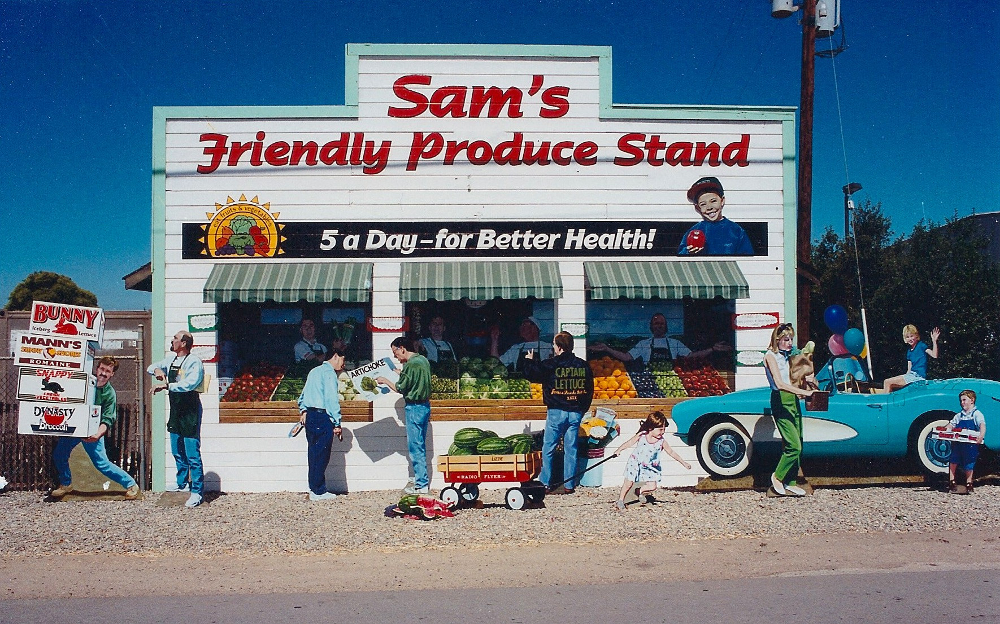
Sam's Friendly Produce Stand
1997 & 2005
This time working with Dong Sun Kim, Cerney said goodbye to Tony's and welcomed in Sam's...Sam being named after Sam Eastman, the property owner. Real awnings installed, a cool old Corvette, and many more cutout people to create a buzz of activity.{kind=link}
 In the foreground section, a little girl (Lizzie) pulls a wagon full of watermelons, dropping one. All figures were roughly life-size.
In the foreground section, a little girl (Lizzie) pulls a wagon full of watermelons, dropping one. All figures were roughly life-size.

Iowa Landscape
1997
A non-commissioned scene on a farm in western Iowa. Cerney convinced the parents of an ex-produce worker friend to allow him to place this unusual domestic scene on the edge of their farm off Highway 30, near Dunlap, Iowa. 16 feet tall, the man is hanging an Iowa landscape painting in front of an actual Iowa landscape. The Heins are posed in the foreground, owners of the farm. This scene was replaced in 1999 by the Little Girl Crying, and the landscape scene now sits in front of a picture frame shop in Salinas, CA.
Grapes of Wrath
1995
12 feet tall by 16 feet wide. Installed alongside Highway 68 in Salinas as a teaser for the upcoming National Steinbeck Center, opened several months later. John Steinbeck is seen peeking behind one of the gas pumps in this 'still' from the Hollywood movie of Steinbeck's popular novel. Taken down in the early 2000's.{kind=link}
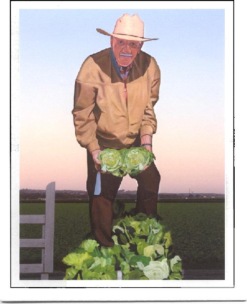
Bob Lyman
1995
One of the 3 original 'giant' figures that Cerney painted for the Crown Packing Company in Salinas, CA. Bob, a fieldman for Crown for over 50 years, was honored with this painting on his 80th birthday. It was originally installed on Highway 101 just south of Salinas, then moved a few years later to Highway 68 near the Salinas River. It was completely re-done in 2002 with the new acrylic paints that the artist now uses.{kind=link}
{kind=link}
{kind=link}
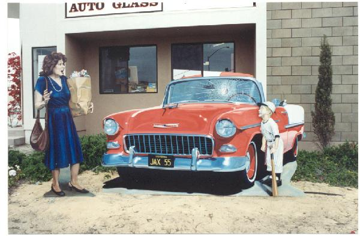
Alan's Glass
1994
Lifesize cut-out mural for an auto glass shop in Sand City, CA. The '55 Chevy was borrowed from baseball star Reggie Jackson's collection for the scene. Fellow artist Olia Polovneff painted the 2 figures.
Another Landscape Painter
1994
6 feet tall by 10 feet wide. One of Cerney's first freestanding cut-out murals, placed alongside Highway 101 in Prunedale on the property of Schoch Dairy. Designed by Cerney, but painted by Olia Polovneff. No longer in existence.
Cochetti Body Shop
1986 & 1993
Cerney's first commercial mural, located in Salinas, CA. Painted on cinderblock wall. Lifesize.
Enjoy the Drive
1985 & 1993
Located off Highway 101 in Aromas. 11 feet tall by 50 feet wide. One of Cerney's very early barn murals, and a rare one painted in black and white, it was just a fun message of not stressing out on your daily drive. Cerney painted it in oil-base enamel, and it started cracking and deteriorating within 3 years. He ultimately started using water base acrylic paints, and this barn mural became his 'Enjoy the Game' mural in 1991.
Tony's Friendly Auto Service
1983
Highway 68 near Salinas,CA (16 feet tall by 30 feet wide). Cerney's very first public art project after graduating from Cal State University Long Beach. Cerney asked the owner (Sam Eastman) if he could paint his old barn, and he said to go ahead. It turns out that the building is one of the oldest standing structures in Monterey County (1860's), and Cerney has painted 7 different mural images on this site over the years.
Cerney wanted to refresh the mural and add some 3-dimensional elements to the scene, so he painted a gal in an old Corvette, and the service manager is sticking outside the right edge of the building. This version appeared in National Geographic Magazine in 1988.
 Cerney finally came up with a concept to make some money on this mural by adding a flatbed pickup truck loaded up with Salinas Valley produce boxes, and charging each company that signed up a fee to have their label painted on. The scene also started to get more populated with customers. As with most of his personal projects, Cerney used friends as models.
Cerney finally came up with a concept to make some money on this mural by adding a flatbed pickup truck loaded up with Salinas Valley produce boxes, and charging each company that signed up a fee to have their label painted on. The scene also started to get more populated with customers. As with most of his personal projects, Cerney used friends as models.